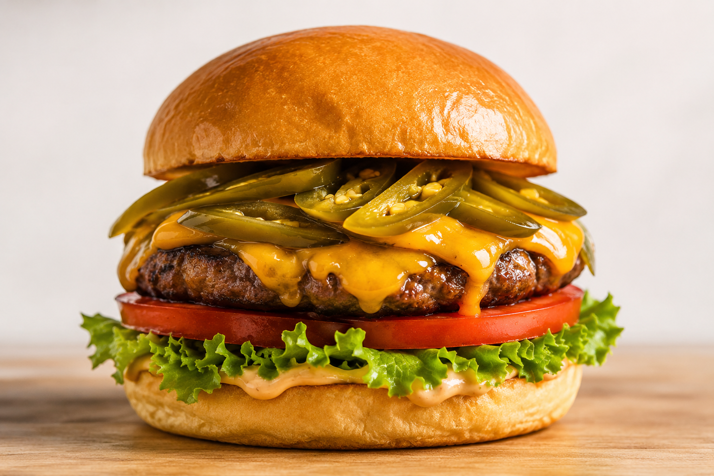

Hamburguesa con jalapeños
Ingredientes
- 1 medallón de carne
- 1 pan de hamburguesa
- 3 fetas de queso cheddar
- Hojas de lechuga fresca
- 2 rodajas de tomate
- 3 rebanadas de Jalapeños Curbelo
Preparación
- Cociná el medallón en una plancha o sartén caliente hasta alcanzar el punto de cocción deseado.
- En los últimos minutos, agregá el queso cheddar sobre la carne para que se funda.
- Tostá ligeramente el pan de hamburguesa.
- Armá la hamburguesa colocando la lechuga, el tomate y el medallón con queso.
- Coroná con los Jalapeños Curbelo para aportar un toque picante y lleno de sabor.